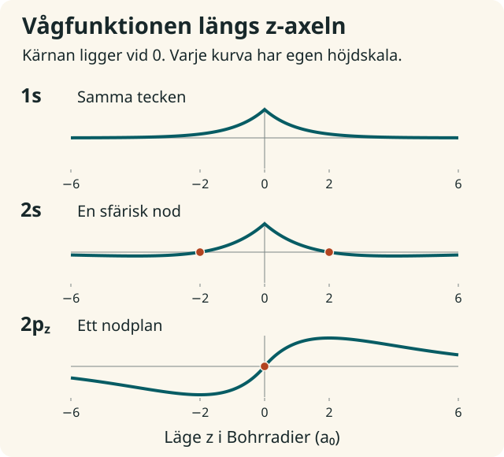

Vetenskaplig briefing · Kemi och fysik
Vad visar en atomorbital?
Vad betyder konturen runt en elektron i en lärobok? Lägg två genomskinliga blad över en bild av en väteatom. På det ena finns en tunn ring kring kärnan. På det andra finns en yta som omsluter ett område. Det första bladet hör till Bohrs modell. Det andra kan visa var en positionsmätning väntas ge utslag med en viss sannolikhet. För att rita den senare bilden behöver vi en orbital, en vågfunktion som beskriver elektronens rumsliga tillstånd.
Vilken fråga besvarar ringen?
Väte har en kärna med en proton och, i den neutrala atomen, en elektron. När väte sänder ut ljus kan man dela upp ljuset efter våglängd. Då framträder bestämda linjer. Deras lägen berättar att atomen kan lämna ifrån sig vissa bestämda energimängder. Bohr fick fram energinivåer som förklarade huvuddragen i det mönstret. I hans modell hörde varje tillåten cirkelbana till en bestämd energi.
Vad visar då en lägesmätning? På en cirkel har varje punkt samma avstånd till mitten. Mätningar på många väteatomer i grundtillståndet kan däremot ge en hel fördelning av avstånd. I en modern skalbild kan siffran för skalet fortfarande hjälpa oss att ordna tillstånden. Inom ett och samma skal ryms ibland flera orbitaler med olika rumslig form.
Så läser du en sannolikhetsbild
Föreställ dig en lång följd av likadana försök. Inför varje försök förbereds en väteatom i samma tillstånd. Kärnan får ange mitten och apparaten registrerar elektronens läge en gång. Markera varje mätresultat i samma koordinatsystem. Med många försök blir vissa områden tätare prickade än andra. Varje prick står för ett utfall i ett eget försök. En linje mellan två prickar skulle förbinda två olika försök.
Vågfunktionen brukar skrivas med den grekiska bokstaven ψ, psi. Storheten |ψ|² ger sannolikhetstätheten. Tänk dig två lika små lådor på olika ställen i bilden. Lådan med högre genomsnittlig täthet har större chans att fånga ett mätutfall. För en större låda måste man väga samman tätheten över hela dess volym. Det spelar alltså roll både hur tätt prickarna väntas hamna och hur mycket plats området omfattar. Bilden ger ingen avläsning av var en viss elektron befinner sig mellan mätningarna.
Här finns en liten överraskning som går att visa med ett äpple. Skala av ett tunt lager nära äpplets yta och tänk dig ett lika tunt lager alldeles kring kärnhuset. Det yttre lagret innehåller mer fruktkött eftersom det sträcker sig runt en större sfär. På liknande sätt får ett tunt sfäriskt skikt i atomen större volym ju längre ut det ligger. För att jämföra sannolikheten att mäta två olika avstånd måste man därför ta hänsyn till skiktens volym. Påståendena ”högst täthet vid kärnan” och ”flest utfall i ett skikt en bit ut” kan båda stämma för 1s. Äpplet hjälper oss bara att jämföra volymer. Dess fasta yta saknar motsvarighet i atomen.
Vad finns utanför en 90-procentsyta?
Låt Skogsväktaren nu välja ett område som tillsammans rymmer 90 procent av den beräknade sannolikheten. Utmed områdets gräns ritas en yta. Vid tusen oberoende mätningar på likadant förberedda atomer väntar vi oss ungefär hundra utfall utanför ytan. Ett utslag utanför är alltså helt förenligt med modellen. Hade tecknaren valt 95 procent skulle mer av fördelningen behöva omslutas. Valet av kontur ändrar teckningen medan atomens tillstånd förblir detsamma.
Täck över bildtexten. En sfär kan omsluta många olika procentsatser. Vilken gäller här? För att svara måste läsaren känna till tecknarens regel.
Tre tillstånd med olika mönster
I vätets 1s-tillstånd ser fördelningen likadan ut åt alla håll från kärnan. Tätheten per liten volym är högst i mitten och sjunker utåt. Även 2s är sfäriskt symmetrisk. Där finns dock ett särskilt avstånd från kärnan där vågfunktionen är noll. Alla punkter på det avståndet bildar en sfärisk nod. Ett snitt genom dess mitt visar en ring. På båda sidor om noden kan en liten mätvolym få utslag.
Välj nu den 2p-orbital som brukar kallas 2pz. Dess två lober ligger på varsin sida om ett plan genom kärnan. Planet står vinkelrätt mot den valda z-axeln och är en nod. De båda loberna tillhör samma orbital och kan beskriva samma ensamma elektron. Fråga läsaren vad som händer med bilden om vi räknar lober i stället för elektroner. Då får vi dubbelt så många som faktiskt finns.
Siffran två i 2s och 2p berättar att båda hör till det andra skalet. Bokstäverna skiljer tillstånden åt även när deras energier sammanfaller i den enklaste vätemodellen. Att bara fråga vilket skal elektronen tillhör räcker alltså inte för att välja rätt bild.

Fördjupning: Varför får loberna olika färg?
Här kan vågfunktionen väljas reell. Då kan två färger visa var dess värde är positivt respektive negativt. När värdet kvadreras ger båda tecknen positiv täthet, medan noll fortfarande ger noll. Tecknen anger heller ingen elektrisk laddning. Elektronens laddning är densamma på båda sidor av nodplanet. Varför behålla tecknen alls? När vågfunktioner kombineras läggs deras amplituder samman före kvadreringen. Bidrag med samma tecken kan förstärka varandra, och bidrag med motsatta tecken kan helt eller delvis ta ut varandra. Det är den relativa skillnaden som har betydelse: byter man tecken överallt i en ensam orbital får man precis samma sannolikhetsbild.
Källor och vad de tillför
- MIT OpenCourseWare · föreläsning 6 (PDF). Universitetets eget kursmaterial skiljer radiella och vinkelformade noder åt och visar 2p-orbitalens teckenbyte. Figurerna är modellbilder.
- OpenStax · The Hydrogen Atom. Tabell 8.1 ger de vätefunktioner som används i vårt diagram. I atomer med flera elektroner påverkar elektronerna varandra, så samma enkla uttryck kan inte användas oförändrade.